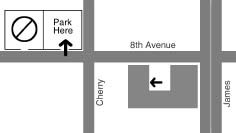

Coming from the north on Interstate 5, take the James Street exit 165A. From Sixth Avenue turn left onto James Street, then left again onto 8th Avenue.Coming from the south on Interstate 5, take exit 164A towards Spokane/Madison Street. Turn right onto James Street and left onto 8th Avenue.
Park in the lot on the right, just north of 8th and Cherry. The 24 slots at the end of the lot closest to the church are reserved for Trinity Episcopal.
C.G. Jung Society, Seattle home page
Updated: 4 January 2002
webmaster@jungseattle.org